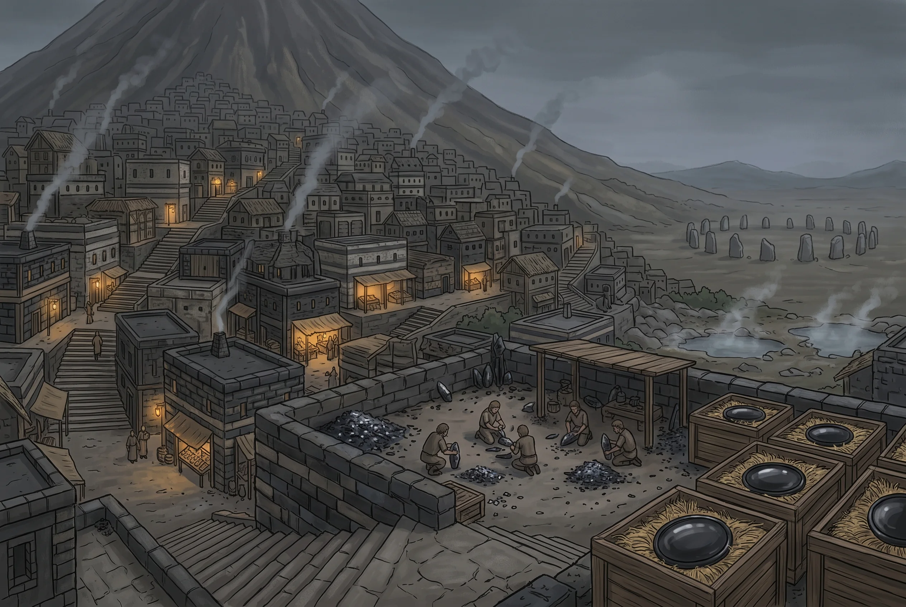

Mons
City · Buralia · Settled · The neutral market; obsidian, sulphur, crystal · pop. ~2,800, and twice that at a gathering
Type: City · Condition: Well-kept · Disposition: Wary First look: Boundary of standing stones · Projects: Trade · Touchstones: Strict laws Region: Mons · Location: Mountain Location detail: Terraced up the flank of the Vulkana caldera, above the Buralian ash country
Exports: Volcanic glass: blades, prismatic cores, ground plate, and mirrors. Sulphur, pumice, and the crystal out of the high vents. Everything the fen and the ash country produce, bulked and sent west: fen fruit, medicinals, dried fungus, hides, horn, and feathers. Mons makes little and moves everything.
Imports: Grain above everything, and cloth, iron and salt with it, carried up the forty miles from the wharf at Intersang and traded on for whatever comes down out of the interior. What arrives by the Freeport road arrives dearer and is bought when the Bay crossing has failed.
Mons is built up the flank of a mountain that is still warm, climbing from the river to the high quarter in stepped shelves cut and levelled out of old flows, and the streets that connect them are stairs more often than roads. Nothing is built of wood that could be built of stone, because stone is what there is: black glassy rock that takes an edge, grey tuff soft enough to saw and hard enough to last, and the pale banded stuff the quarries call ribbon. Above and behind it all sits Vulkana Caldera, which Mons does not discuss much, in the way people do not discuss a parent’s illness.
Ash is not an event here, it is the weather. There are ash days, when it comes down dry and fine and gets into the eyes and the food and the seams of clothing and stands in drifts against the stair-risers; and there are mud days, when it comes down through rain and the whole city is coated in a thin grey slurry that dries to a crust and is walked into every room in Mons. Nothing here is clean and nobody expects it to be. Washing is something you do to be less filthy for an afternoon. Visitors are marked by the effort they are still making about it; Mons stopped a long time ago. The Gards wear grey because grey is the one colour the crust does not show on.
The country around it is barren and does not want anybody. Cinder plain, ash flat, lava field, thorn. And to the north, where the ground finally lets go, the Weirden Fen, sixty miles of swamp and standing jungle that is worse. There is no Buralian government out here in any sense the word usually carries. What the empire has instead is the tribute train, which goes east every year and is counted at both ends, and the standing understanding that a region which pays is a region the court can skip. What there is instead is perhaps a dozen peoples who do not consider themselves one people: fen-gatherers, glass-knappers, sulphur men, the herders of the high ash, the river clans, and others who come once a year and are not asked too closely where from. They trade with each other, and several of them have been killing each other for longer than anyone has been counting.
And they all come to Mons, because Mons is where nobody is allowed to. Inside a ring of set stones a mile out from the lowest terrace, the Peace holds: no blade drawn, no blow struck, no debt collected by hand, no feud pursued. You may meet the man who killed your brother in the fish market and you may say what you like to him and you may not touch him. Disputes go to the Gards, who hear them, decide them, and are not appealed.
The Gards are not soldiers and could not hold the city against any one of the peoples who use it, let alone several. They do not have to. The sanction is the gate: break the Peace and you are put out, and so is your house, and so (for a season, or a generation, depending) is everyone who claims kin with you. Nobody can afford that. The fen has no salt and the ash country has no grain and the glass is worth nothing until somebody carries it west, and all of that happens here or it does not happen. The Peace is kept by the people it constrains, for the reason that they need it more than they need the killing.
What makes the Gards more than a magistracy is what they are, and what they are is visible from across a market.
They are Touched, and specifically they are Varanine (of the monitor lizards) and they are Thirds, four to six manifestations apiece and none of them correctable. It is worth being exact about what that looks like, because it is not what the word wyrm puts in an outsider’s head. There is nothing of the dragon about a gard. The eye is round and dark and takes up too much of the face, with no white showing, and it does not blink when you would expect it to. The skin is loose and finely grained rather than plated, dry to the touch, and under it across the shoulders and forearms lies a bony grain you feel before you see: osteoderms, which is why a blow aimed at a gard tends to skid. The tongue is forked and comes out to taste the air in the middle of a sentence, without the man appearing to notice he has done it. The hands are heavy and the nails are not fingernails. And the whole thing is still: a stillness that outlasts the conversation, that people find harder to sit with than any amount of scale, and that ends, when it ends, faster than anybody is ready for.
In Freeport a man like that is the bottom of the Puritan caste, kept off the good streets and lucky to get work in a tannery. In Mons he is the law. The mountain is a wyrm; his keepers are lizards; the tribes have never troubled themselves about the gap between the two, and neither has the order.
Nothing supernatural is happening. Varanine Touched are born to the tribes at the rate they are born anywhere, and the order takes them, rendered up young, the way a taking is rendered up, and with about as much choice in it. That is the second reason the Peace works. A gard has no tribe. He was given away before he could remember having one, he is kin to nobody in the market, and every people in the region can therefore accept his judgement without any of them having to accept another’s. The order is hereditary in the sense that it breeds true; it is not a family.
It also cannot leave. Whatever the Azure Mendicants would say about it, a Third of that aspect runs cold: slow in a cold dawn, stupid in a hard winter, and wanting warm ground the way the Verdani want green flow. On the Back there is warm ground everywhere, all year, for nothing. A gard sent down to the coast is a diminished creature within a month and knows it. Kroduk’s keepers keep Kroduk because they are, in the most literal and least mystical sense, unable to go anywhere else.
The order is Wilden: Kroduk’s, of the faith Freeport drove underground and whose oaths elsewhere are sworn by warlords and reckless battlemages. Here it runs the city, and it runs it inside out: the Gards ask Kroduk for nothing at all. Vulkana Caldera is Kroduk, and Kroduk is asleep, and the whole office of the order is attendance: read the vents, watch the springs, say when the Back is to be cleared and when the roofs must be swept, and above all give him no reason to turn over. When the ground shakes, he is moving. When ash comes down, he has spoken.
Blood spilled in the mountain’s shadow is a reason. That is the doctrine, stated plainly and without much decoration, and enough ash-falls have followed enough killings within living memory that nobody is keen to test it. The order is right about the mountain often enough that four generations have arranged their lives around the word of a stranger in a grey coat, and it is that accuracy, more than the theology, which makes the tribes listen when the same stranger says a feud stops at the stones. Whether the Gards believe the doctrine themselves is a question they decline to answer, and the decline is very practised.
And the Peace has a price that everyone pays and nobody defends. Out in the country a beaten people is not scattered, it is taken: set to the work its takers do not want, hauling sulphur, cutting glass, carrying. Part of every such taking is rendered to Mons as tribute, and the Gards put those people down the crystal vents, which is the worst work in western Buralia and the reason there is any crystal at all. So the order that will not permit a blow struck inside its stones is supplied, directly and continuously, by the violence outside them. This is understood. It is not argued about, because the argument has no end that anybody wants to reach.
The order was calling it before there was an empire to disapprove. The first Clearing on the Gards’ reckoning was 162 SU, the third was 176, and the first imperial column did not come up the road until 183. Nothing about the practice was granted to Mons by anybody, and the empire’s contribution has been to write it down.
Against that stands the Clearing. Every seventh year, on the order’s reckoning, the Gards call it, and every slave in the region is free on the day: those in the vents, those in the tribes, all of them, wherever they were taken from and however recently. The same word is used for clearing the Back, and the doubling is deliberate: a ledger, like a mountain, is not permitted to build up past a certain point.
It is not emancipation and nobody here would use the word. The Clearing frees a man into exactly the country he was taken out of, where the only standing anybody has is who can take whom. He walks home and next season he may be taken again, by the same people or by others, or he may go with his own and come back holding somebody else’s rope. Both happen constantly. There is no direction to it. The wheel turns and the Gards turn it, and what they prevent is not slavery but permanence: a tribe that could keep its takings forever would grow until it no longer needed Mons, and Mons would end. The tribes accept the Clearing because each of them expects to be on the taking side of the next one.
None of this is a scandal here, and it is important to understand why. Kroduk’s domains are fire, destruction, the mana-storm. And conquest. The strong taking the weak is not a regrettable feature of the world in the Gards’s teaching; it is the order of the world, and their god presides over it. They preach nothing against it. What they forbid is one place and one reason: not here, not on his back, not while he is sleeping. In Mons the words slave and free are not moral categories at all. They describe who is holding whom this year, and everyone expects the answer to change.
There is arithmetic in it, too. A taking in the sixth year buys one year of work, and the wars in this country cluster early in the cycle for reasons anybody can count.
Outside the stones there is no Peace and no pretence of one. The interior is ruled by force and by nothing else: ground is held because somebody can hold it, passage is granted, bought or taken, and a caravan on the ash roads travels with the people whose country it is crossing or it does not arrive. The Gards claim nothing beyond the ring and go nowhere beyond it, and the line is exact: a mile out from the lowest terrace, marked in set stone, and every soul in the region knows precisely where it runs. There are camps a half-mile past it where men sit and wait for other men to finish their business and come out.
Glass
Mons does not make glass. Mons finds it, and the difference is the whole industry.
There is no furnace here and there could not be. Melting sand into glass wants a fire held at a killing heat for days, and this is cinder plain and ash flat with not a tree on it: the nearest standing timber is sixty miles north in the Weirden Fen, through country where passage is granted, bought or taken. A city that could run a glass furnace could run a smelter, and if Mons could smelt it would not be buying Pinna iron.
What it has instead is obsidian, which the mountain already melted. It comes off specific flows rather than off the mountain generally (a knappable flow is a known thing with a name and an owner, worked down over generations and fought over when it thins) and it needs no fuel at all, only hands.
Those hands belong to the glass-knappers, who are one of the frontier’s peoples rather than a Mons guild, and the work runs in three grades. Blades are struck as long prismatic flakes off a prepared core and are the bulk trade: an obsidian edge is finer than anything steel will take and it is brittle with it, so it wins wherever sharpness matters more than durability and loses everywhere else. That is a clean division rather than a rivalry: Mons sells the one cutting thing the Pinna cannot make and buys Pinna iron for everything the Pinna does better. The Azure Mendicants take blades by the case and do not haggle.
Plate is the harder trade: broad flat flakes struck off a large core, then ground down and polished on abrasive by somebody who will spend a fortnight on one piece. And a plate polished far enough stops being plate and becomes a mirror: black, faintly warm in tone, giving a darker and stranger reflection than any bronze, and worth more by weight than anything else that leaves western Buralia. Freeport buys them, Typpe buys them, and the Pura Ecclesia buys them while remaining publicly undecided about whether a mirror out of Kroduk’s country belongs in a devout house.
Features
- Terraces stepped up the mountain, streets that are stairs
- Everything built in black glass, grey tuff and ribbon stone
- Knappers working prepared cores, and the litter of flakes around them
- A fortnight of grinding for one plate, and the man who does nothing else
- Black mirrors crated in straw, worth more than the cart carrying them
- The ring of set stones a mile out, and everyone knowing where it is
- Weapons peace-bonded at the gate, and checked
- Grey-coated Gards hearing a dispute in the open, scale showing at the cuff
- Round unblinking eyes, and a forked tongue tasting the air mid-sentence
- Judges who are kin to nobody present
- Kroduk’s wyrm cut over doorways, and no Ecclesia anywhere
- Steam standing off the springs on cold mornings
- Roofs uniformly pitched against ash-fall, and inspectors who check
- A market where four languages are bargaining and nobody is armed
- Sulphur carried out on men’s backs; no animal will work the flats
- Ash days and mud days, and nothing in the city clean
- Grey crust walked into every room, and grey coats that do not show it
- Tremors most weeks; conversation pausing, then resuming
- Tribute-taken worked down the crystal vents
- The Clearing counted toward, and wars timed against it
- Slave and free spoken of as this year’s arrangement, not as fates
- Camps beyond the stones, waiting
Quest Starter
A man was found dead inside the ring, and the manner of it was not an accident. The Gards have not named anyone, which everybody understands to mean they cannot. Four peoples are in the city for the gathering, three of them with reason, and the Peace has never survived an unanswered killing. It has eleven days until the market breaks up and everyone goes home armed.